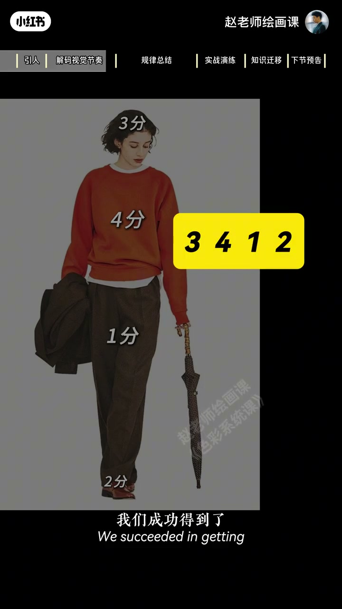
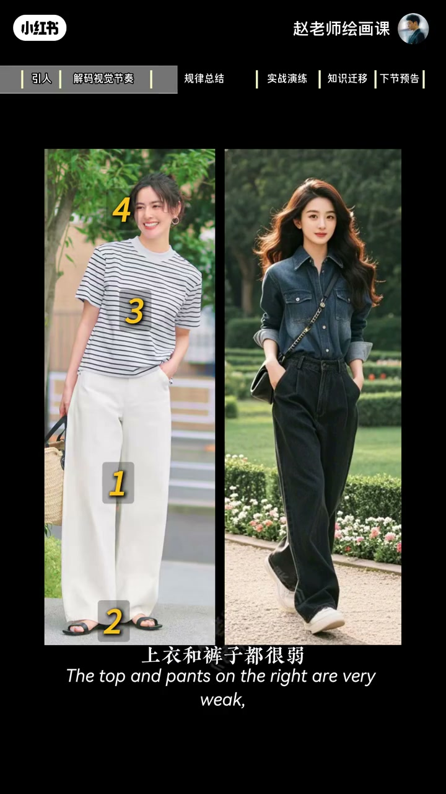
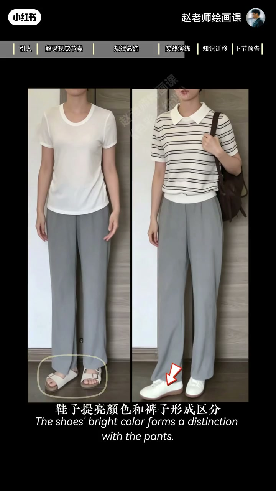
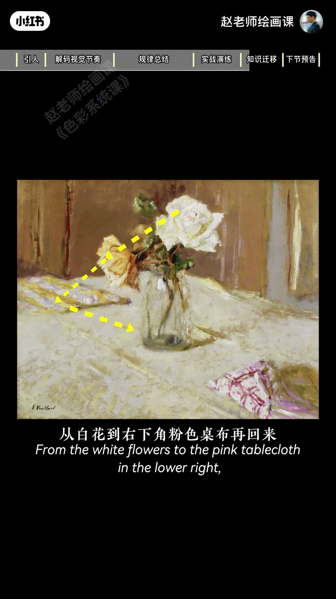

内容要点
有的穿搭高级、有的用心却怪，未必只是配色，更底层是视觉节奏。橙衣例：视线脸→衣→裤→鞋；强度脸3衣4裤1鞋2得编码3412。左4312数字几乎不重复故高级，右4114双强双弱节奏乱。规律：数字尽量不重复，最强点全身唯一；相邻两部分强弱不要一样。白衣灰裤提条纹、提亮鞋、加黑包即可重排节奏。维亚尔油画视线绕圈同理——绘画穿搭共享节奏逻辑。
知识结构
打分得3412节奏码。
不重复；相邻异强；4312vs4114。
优化练习；维亚尔绕圈。
先编排脸衣裤鞋的视觉强弱节奏，再谈颜色；最强点只能有一个。
00:00-00:58把穿搭打成节奏编码
高级感与怪感之差，你可能觉得是色彩，但更底层叫视觉节奏感。看这身：第一眼脸，随即橙衣，略过裤子，最后稍高纯度的鞋——视线完成有节奏的上下运动。
把脸上衣裤鞋按视觉强度打分：橙衣最强4，裤最弱1，脸3鞋2，得到3412视觉节奏编排。00:52 黄框编码。

00:58-01:50规律：唯一最强与相邻异强
回开头对比：左脸4衣3裤1鞋2；右衣裤都弱为1，脸鞋都强为4。4312数字几乎不重复，4114两个4抢眼、两个1连片，节奏混乱故不对劲。
规律一：每个数字尽量不重复，尤其最强点全身只能一个；规律二：相邻两部分强弱不要一样。01:10 对照。

01:50-03:03优化练习与维亚尔
练习：白衣灰裤强度拉不开像睡衣，鞋也未与裤拉开。优化：上衣加条纹提强，鞋提亮与裤区分，再加最强黑书包，节奏马上舒服。
上节维亚尔油画：自白花到右下粉桌布再回，视线有节奏绕圈，故柔和灵动高级。锻炼强度感知：多看大师、多听底层原理。导流色彩系统课。02:05／02:20。


完整转录（98段）
以下文本由 Whisper medium 模型自动转录，可能存在少量识别误差，已尽可能修正。
为什么有的穿搭满满的高级感
但有的明明也用了心思
但还是感觉怪怪的
你可能觉得是色彩搭配的问题
但今天我们讲一个更底层的原因
叫视觉节奏感
来看这身穿搭
第一眼一定会先看到脸蛋
然后马上会被橙色上衣吸引
继续往下迅速略过裤子
最后注意到蠢度稍高的鞋子
于是呢
你的视线完成了一次
从上到下的有节奏的运动
这是为什么
来 我们把脸 上衣 裤子 鞋
这四个部分
按照视觉强度来打分
最强的是橙色上衣
我们给到4分
最弱的是裤子
给到1分
依次是脸 3分
鞋子 2分
3 4 1 2
我们成功得到了
这身穿搭的视觉节奏编版
来 现在回到开头的对比图
左边的为什么高级呢
脸蛋的强度给到4
上衣很素雅
但是有细节花纹
给到3
裤子强度是1
鞋子是2
而右边这身
上衣和裤子都很弱
都是1
脸蛋和鞋子都很强
都是4
4 3 1 2
对比4 1 1 4
我们来找找规律
左边的数字几乎不重复
右边两个4很抢眼
两个1连成一片
视觉节奏混乱
所以右边看起来就是不对劲
因此我们得到一个规律
第一
每个数字尽量不要重复
尤其是最强点
全身上下只能有一个
第二
相邻两个部分的强弱不要一样
有点像数学题了
好 原理掌握
我们来做个练习
发现问题
白色上衣和灰裤子强度拉不开
节奏重复
显得有种松垮的睡衣感
鞋子的强度也没有和裤子拉开
好 来优化一下
上衣增加条纹
强度提升
鞋子提亮
颜色和裤子形成区分
再加一个最强的黑色书包
视觉节奏马上就舒服了
你看啊
上一节课我们讲的
100多年前
维亚尔画了这张油画
从白花到右下角粉色桌布
再回来
我们的视线有节奏的
在画面里绕了一个圈
所以你感觉整幅画面柔和又灵动
高级感满满
那如何锻炼自己
对色彩强度的感知力呢
一是多看经典的大师作品
二是要多听赵老师解析这些底层原理
就可以了
下一节我们来讲
色彩对比的规律
好了 以上的这些内容
其实都来自我一直以来
研究和开设的这套色彩系统课程
课程里我会把绘画
穿搭 设计 电影里的
色彩逻辑和审美原理
全部拆解成
普通人也能真正理解
真正练绘的方法
我在课上等着你
拜拜